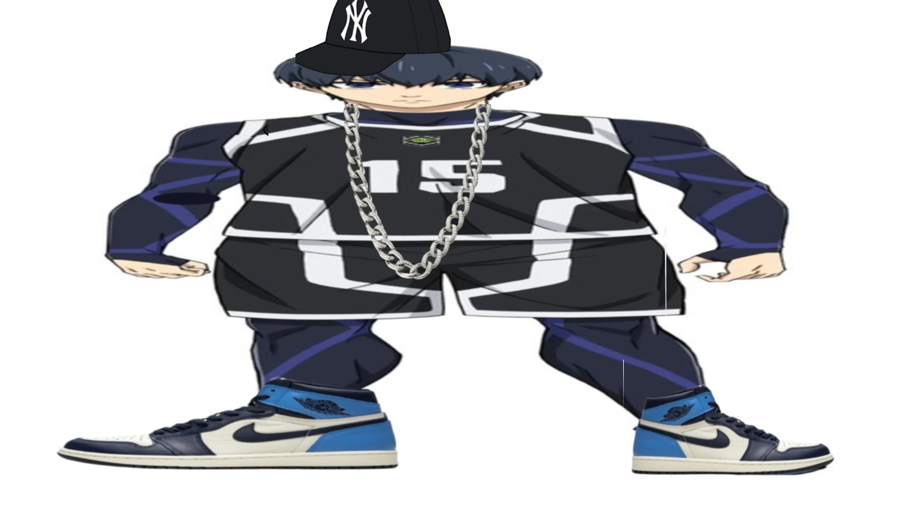
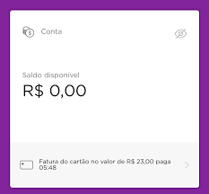

Redes Sociais e o Consumo dos Jovens
Como o Instagram, TikTok e YouTube estão mudando o jeito que a Gen Z e Gen Alpha gastam dinheiro
O impacto real das redes sociais na vida financeira dos jovens
As redes sociais não são mais só diversão. Elas se tornaram uma das maiores influências no consumo da geração atual. O que começa como um scroll inocente pode terminar em compras por impulso, dívidas no cartão e frustração financeira.
71%
da Gen Z passa mais de 3 horas por dia nas redes sociais
77%
usa o TikTok para descobrir novos produtos
58%
já comprou algo só porque viu nas redes
43%
compra por impulso quando algo viraliza
Como as redes sociais influenciam os gastos?
- FOMO (Medo de ficar de fora): Ver todo mundo com produtos novos cria pressão para comprar
- Influencers como referência: Muitos jovens querem copiar o estilo de vida mostrado (mesmo que seja financiado por dívida)
- Compras integradas: TikTok Shop e Instagram Checkout facilitam comprar sem nem sair do app
- Comparação constante: Leva a gastar em roupas, acessórios e gadgets só para manter a imagem

Quando o Reels te convence que você "precisa" daquele tênis de R$ 800

Vida perfeita no feed × realidade da conta bancária
Gen Alpha já nascendo com o desejo de consumir por causa dos vídeos
Reflexão final
As redes sociais não são o vilão, mas são uma ferramenta poderosa que pode ser usada a favor ou contra nossa saúde financeira. O segredo está em consumir conteúdo consciente, questionar os anúncios disfarçados de "dica" e priorizar educação financeira.
Usar as redes a seu favor: seguir perfis de finanças, aprender sobre juros compostos e investir em si mesmo ao invés de só em aparência.